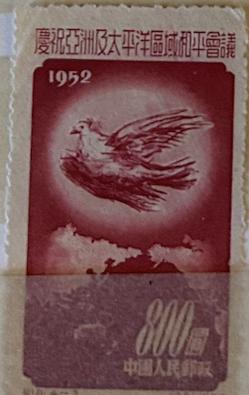
| SOURCE | TITLE| IMAGE MATCH | click to source page |
| eBay | Error, Variety Chinese Stamps for sale | eBay | 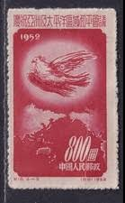 |
| eBay | PRC #167-168 Unused, No Gum | eBay | 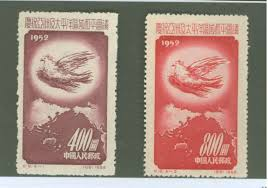 |
| Etsy | Set of 4 1952 China Stamps | - Etsy |  |
| Todocolección | china, republica popular nº 190 (año 1952) palo - Buy Stamps about birds on todocoleccion | 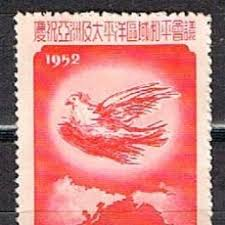 |
| OLX Ukraine | Марки филателия: 10 грн. - Коллекционирование Белая Церковь на Olx |  |
| Etsy | Set of 4 1952 China Stamps | - Etsy Australia |  |
| Etsy | Set of 4 1952 China Stamps | - Etsy Denmark | 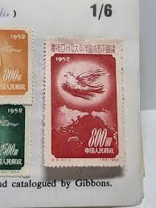 |
| eBay | CHINA LOT OF 2 STAMPS ( SOUV D4 ) BB 11 | eBay |  |
| Find Your Stamps Value | World Peace: Picasso Dove - 保护世界和平：毕加索鸽子$800 Purple stamp price, value |  |
| eBay | AOP) China PRC #167-70 cto used. 1952 Peace Conference set of 4 | eBay |  |
| Stamp Community Forum | Doves As Symbols Of Peace - Page 18 - Stamp Community Forum | 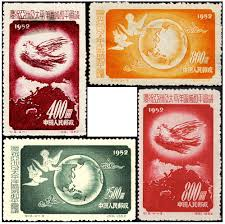 |
| eBay | Mint No Gum/MNG Birds Chinese Stamps for sale | eBay |  |
| eBay Australia | Birds Chinese Stamps for sale | Shop with Afterpay | eBay Australia | 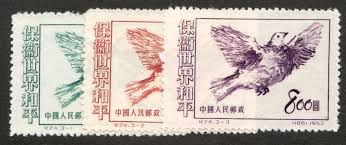 |
| Carousell | China Stamps C24 MNH NGAI, Hobbies & Toys, Memorabilia & Collectibles, Stamps & Prints on Carousell | 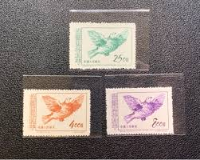 |
| HipStamp | China-1951-Sc#108-110 Picasso Painting-Peace Dove-Fancy Cancel VF Rare | Asia - China, General Issue Stamp / HipStamp |  |
| eBay | Pre-Decimal Mint No Gum/MNG Chinese Stamps for sale | eBay | 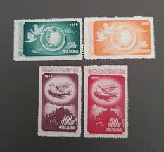 |
| HipStamp | P.R.C. China #188 MNH Stamp - CAT VALUE $2.25 | Asia - China, General Issue Stamp / HipStamp | 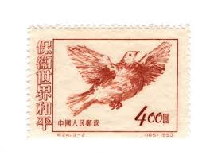 |
| Xabusiness.com | 1952 China Stamps |  |
| eBay | Peoples Republic of China Scott #167-70 (4 stamps from 1952) Unused | eBay | 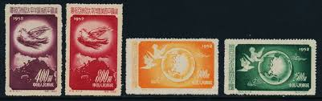 |
| Xabusiness.com | C24 Scott 187-189 Defend World Peace (3rd Set) - China Stamps |  |
| eBay | 3 Cent US Possessions Stamps for sale | eBay | 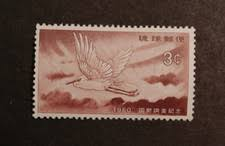 |
| eBay | PRC 1953 Sc 187/9 dove,set MNH,no gum as issued r2134 | eBay | 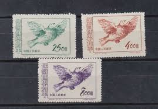 |
| eBay | China PRC Scott 167-170 1952 | eBay | 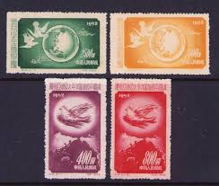 |
| Find Your Stamps Value | World Peace: Picasso Dove - 保护世界和平：毕加索鸽子$400 Orange brown stamp price, value | 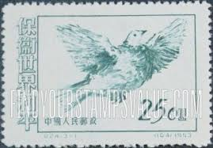 |
| eBay | China PRC 1952, C18, Sc. 167-170, Mi. 192-195, MINT, MNH, 6 complete set NGAI | eBay | 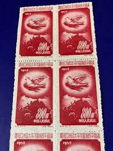 |
| eBay | CHINA PRC 1953 C24 WORLD PEACE, DOVES (Scott 187-89) VF MNH | eBay |  |
| eBay | Chinese Stamp Collections & Mixtures for sale | Shop with Afterpay | eBay Australia |  |
| eBay | China C18 Asia-Pacific Peace Conference Set of 4v - Mint NGAI (SL182) | eBay |  |
| Shutterstock | China Circa 1953 Stamp Printed China Stock Photo 43194898 | Shutterstock |  |
| eBay | China Sc 187-9, C24, Mint, No Gum As Issued, Fresh Color, Very Fine | eBay |  |
| eBay | Ryukyu Islands - 1960 - 3 Cents Reddish Brown Little Egret & Rising Sun #74 F-VF | eBay | 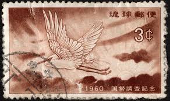 |
| BidCurios | Birds Used China - P0840 - BidCurios | 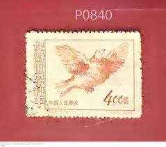 |
| lastdodo.com | Dove Of Peace (1953) - China - People's Republic - LastDodo | 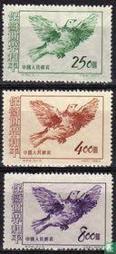 |
| eBay | China stamps Sc#187-189 "World Peace" three stamps Unused | eBay |  |
| HipStamp | China Stamp: 1953-Sc#187-9 World Peace Picasso Dove ; Mnh-Set of 3 Stamps | Asia - China, General Issue Stamp / HipStamp | 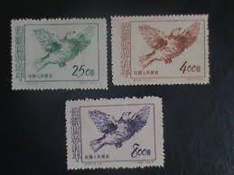 |
| eBay | Mint Never Hinged/MNH Birds Japanese Stamps for sale | eBay | 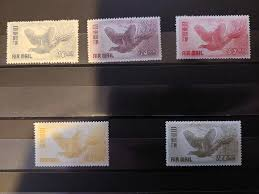 |
| eBay | Ryukyu Islands 74 (1959) 3c Egret and Rising Sun block of four never hinged | eBay |  |
| eBay | CHINA PRC 1952 PEACE CONFERENCE (SCOTT 167-170) VF MNH | eBay | 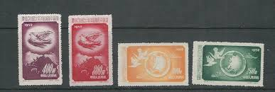 |
| eBay | RYUKYU 1960 LITTLE EGRET AND RISING SUN MNH Sc 74 | eBay |  |
| So I reached 10k stamps!! : r/stampcollecting |  | |
| eBay | R7/24 China Stamp 1951 Peace Complete Set Of 3 T24.3-1 -3 MNHNGAI Great Coll | eBay | 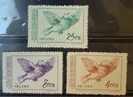 |
| Cherrystone Auctions | U.S. & Worldwide Stamps & Postal History - June 3-4, 2009 - JAPAN Air Post | 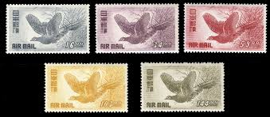 |
| eBay | Birds Air Mail Japanese Stamps for sale | eBay | 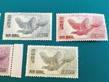 |
| Stamp Auction Network | SAN Unattended Live Bidding Catalog Level 3 |  |
| Stamp Auction Network | Prices Realized | 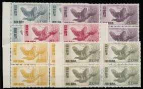 |
| eBay | China, Peoples Rep. of, Scott 187-189 (1953) Mint LH F-VF, CV $7.00 Q | eBay | 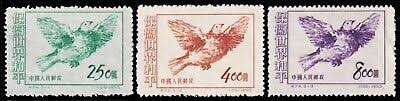 |
| GetArchive | 10 Animals On Stamps Of China Image: PICRYL - Public Domain Media Search Engine Public Domain Search} | 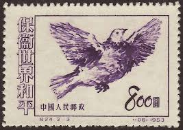 |
| eBay | Japan stamps 1950 MI 494-498 BIRDS MNH VF AIRMAIL | eBay | 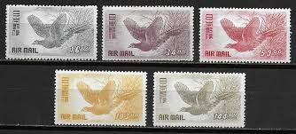 |
| eBay | China 1953 - Mint stamps issued without gum. Mi nr.: 212-214..... (VG) MV-12689 | eBay | 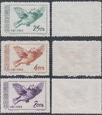 |
| HipStamp | China Stamps: 1951 Sc#110-World Peace-Mint Stamps- 69 Years OLD Stamp Mint Stamp | Asia - China, General Issue Stamp / HipStamp | 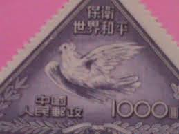 |
| eBay | PR CHINA Stamp - 1953 World Peace Dove 8$ Sn 189 MNG r5 | eBay | 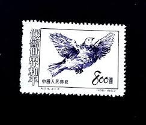 |
| eBay | Birds Air Mail Stamps for sale | eBay | 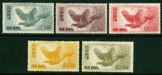 |
| eBay | China 1953 World Peace MNH VF (NGai) | eBay | 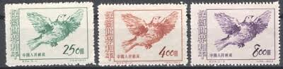 |
| eBay | Old Matchbox label packet China Japan BN166639 Eagle | eBay | 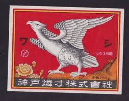 |
| eBay | Japan 1950 - Mihon Overprint - Specimen Overprint (444) Mint never Hinged | eBay | 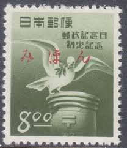 |
| www.stamps.world | Taiwan. 2015 TAIPEI 2015. 30th Asian International Stamp Exhibition. M – www.stamps.world | 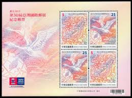 |
| Find Your Stamps Value | World Peace: Picasso Dove - 保护世界和平：毕加索鸽子$250 Blue green stamp price, value | 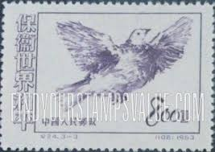 |
| HipStamp | Browse Products in Asia / HipStamp | 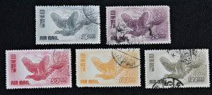 |
| eBay | China Taiwan 2015 FULL S/S TAIPEI Bird 30th Asian Inte'l Exhibition Stamp | eBay | 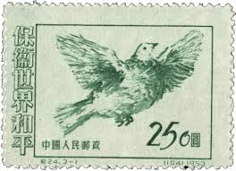 |